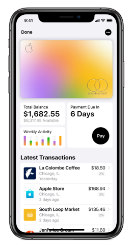
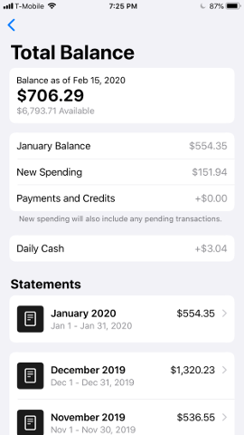
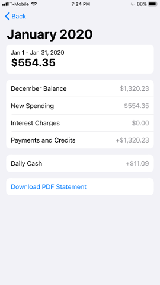

Apple Card
Convert Apple Card statement transactions to CSV

Convert Apple Card statement transactions to CSV
First, download each Apple Card statement from your Wallet by doing the following:
Open your Wallet app.
Tap your Apple Card.
Tap Total Balance (typically immediately underneath the card image).
Under Statements, tap the statement you'd like to export.
Tap Download PDF Statement.
Tap the share icon in the upper right.
Choose whether to Save to Files, e-mail yourself the statement PDF, or select some other means of saving your statement. If you elect to Save to Files, select a location (optional), and then tap Save.
Repeat the above steps for each statement you want to convert to CSV.
As of January 22, 2020, Apple supports exporting your transactions as CSV.
However, for older iOS devices (e.g., iPhone 6 and earlier) which are no longer supported, exporting to CSV is not possible within Apple Wallet. You can only export your statement as a PDF.
In order to provide support for exporting statement transactions for use in software such as Microsoft Excel, Mint, Personal Capital, Google Sheets, and others, this web app converts Apple Card statement transactions stored in exported PDFs to CSV.